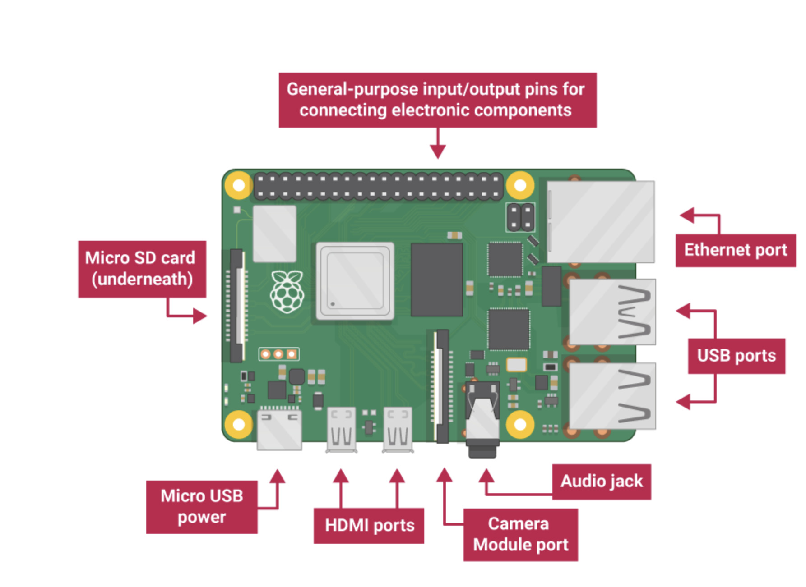

Installatie
Het instellen van een Raspberry Pi is een proces waarbij zowel de hardware als de software worden geconfigureerd, zodat de Raspberry Pi direct gebruiksklaar is. Dit proces is zo ontworpen dat het zelfs voor nieuwe gebruikers eenvoudig is, maar tegelijkertijd flexibel genoeg voor gevorderde gebruikers om aanpassingen te kunnen maken. De Raspberry Pi gebruikt een microSD-kaart als gegevensbron, wat betekent dat het besturingssysteem op de microSD-kaart moet worden geïnstalleerd voordat de Raspberry Pi kan worden opgestart. Dit kan met behulp van de officiële Raspberry Pi Imager, een tool die speciaal voor dit doel is ontworpen en ontwikkeld.
Voor de installatie en het gebruik van een Raspberry Pi zijn verschillende onderdelen nodig: het Raspberry Pi-bord, een microSD-kaart met minimaal 8 GB opslagruimte (maar 16 GB of meer wordt sterk aanbevolen), een geschikte voeding, een HDMI-kabel en een monitor of televisie. Een toetsenbord en muis zijn ook vereist voor de eerste configuratie, tenzij de gebruiker het apparaat zonder monitor of scherm wil configureren.Afhankelijk van het model zijn mogelijk extra accessoires nodig, zoals een micro-HDMI-adapter of een beschermhoes. Zodra deze onderdelen verzameld zijn, kan de installatie beginnen.

Voordat de Raspberry Pi opstart, moet er eerst een opstartbaar besturingssysteem op een microSD-kaart worden geplaatst en in de microSD-sleuf van de computer worden geschoven. Dit gebeurt met het programma Raspberry Pi Imager, waar de gebruiker een geïnstalleerd besturingssysteem selecteert. Vervolgens wordt een versie van Raspberry Pi OS direct op de microSD-kaart geïnstalleerd. Na de installatie kan de microSD-kaart veilig uit de computer worden verwijderd en in de Raspberry Pi worden geplaatst.
Wanneer de Raspberry Pi voor de eerste keer opstart, start hij op vanaf de microSD-kaart en doorloopt hij de installatiewizard. Tijdens dit installatieproces kan de gebruiker de taal, het toetsenbord en de tijdzone-instellingen voor de Raspberry Pi kiezen. Als de Raspberry Pi dit ondersteunt, kan de gebruiker ervoor kiezen om de Raspberry Pi op dit punt met een Wi-Fi-netwerk te verbinden. Het apparaat kan de gebruiker ook vragen of het updates mag controleren en installeren om de nieuwste versie van Raspberry Pi OS te draaien. Het apparaat kan vervolgens opnieuw opstarten.
Zodra de eerste installatie is voltooid, is de Raspberry Pi klaar voor gebruik. De gebruiker kan inloggen op de desktopomgeving, applicaties installeren en beginnen met programmeren in de gekozen programmeertaal, zoals Python of Scratch. Verdere configuratie-instellingen, zoals machtigingen voor het inschakelen van interfaces zoals GPIO, I2C, SPI, camera, enzovoort, kunnen worden aangepast via de Raspberry Pi-configuratie-instellingen. Hierdoor is de Raspberry Pi geschikt voor diverse toepassingen, waaronder programmeren, robotica, automatisering en het Internet of Things.